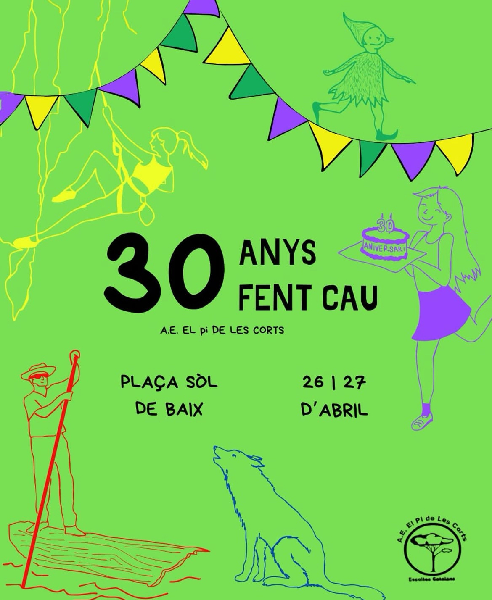

Si tens majoria de respostes D, la teva entitat és...
Ets una bohèmia i t'encanta anar de ruta. Vas descalça per la muntanya perquè dius que reforça la teva connexió amb la natura, però realment l'únic que fas és embrutar-te els peus. I no ens enganyes, que sabem que tens dues cases a la Cerdanya i puges cada 3 caps de setmana a esquiar. Després us ficau en massa a OJS... Però bé, ets una persona bastant xula i o ets guapa (perquè estàs a Pi) o vius envoltada de gent guapa. Quina sort...
